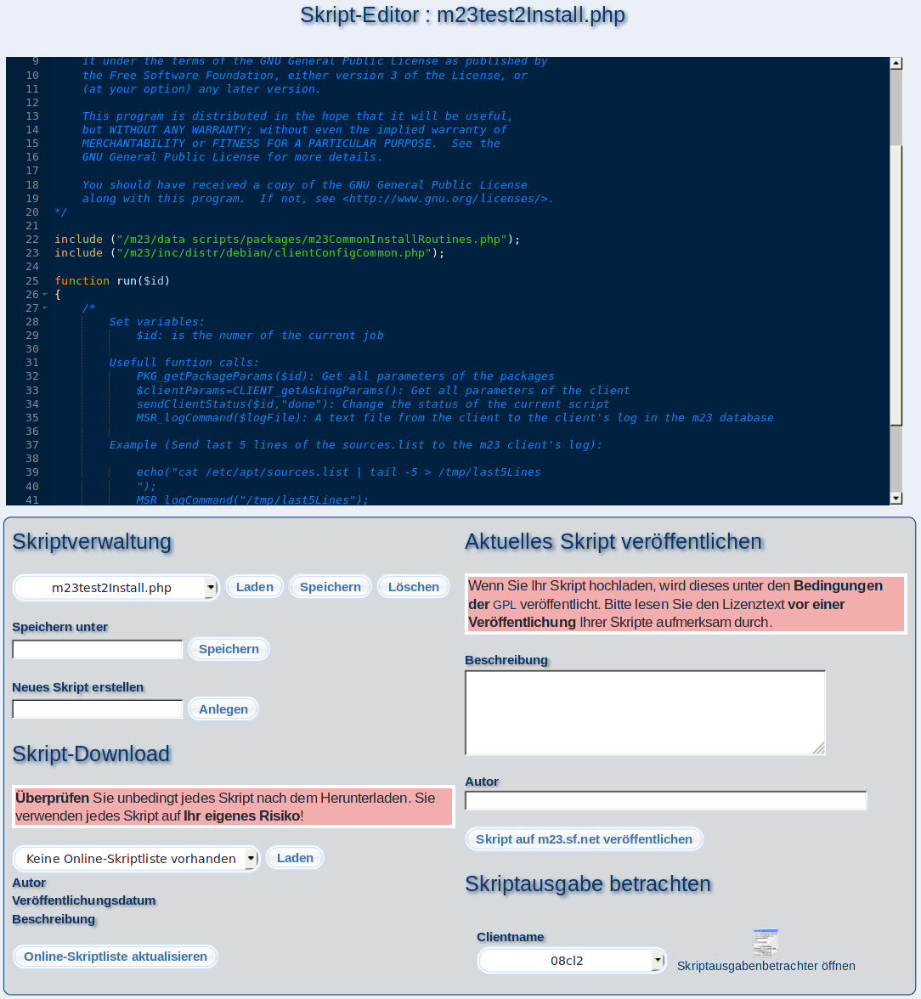

Mit dem Skript-Editor ist das Ausführen von wiederkehrenden Aufgaben auf den Clients so einfach wie die Installation eines Paketes. Mithilfe des Editors können Sie eigene Skripte erstellen und dabei den ganzen Funktionsumfang von m23 nutzen, um den auf den Clients auszuführenden BASH-Code zu generieren. Sie können dabei alle BASH-Befehle verwenden, sowie alle auf den Clients installierten Kommandozeilenprogramme. Die Übersicht über die m23-Befehle finden Sie im ''Development Guide'', der links im Menü zu finden ist.
- Vorhandene Skripte öffnen: Wählen Sie hierzu das betreffende Skript aus der Liste unter ''Datei zum Editieren öffnen'' und klicken Sie anschließend auf ''Laden''. Darauf erscheint der Quelltext im Editorfenster.
- Erstellung eines neuen Skriptes: Geben Sie hierzu einen Namen für das neue Skript bei ''Neues Skript erstellen'' ein und bestätigen Sie mit einem Klick auf ''Anlegen''. In das Editorfenster wird ein kurzes Beispielskript geladen, das Sie anpassen können.
- Skripte speichern und löschen: Klicken Sie hierzu entweder auf ''Speichern'' oder ''Löschen''. Die Operationen beziehen sie jeweils auf das gerade geladenen Skript.
- Teilen Sie Ihre Skripte mit anderen m23-Benutzern: Der Editor beinhaltet eine einfache Möglichkeit, Ihre Skripte mit anderen m23-Benutzern zu teilen und somit einmal erstellte Skripte für einen größeren Nutzerkreis zu öffnen. Alle Skripte werden auf der m23-Webseite in der Rubrik ''Skripte von Benutzern'' veröffentlicht. Um das aktuell geladene Skript zu veröffentlichen, geben Sie bitte unter ''Beschreibung'' an, wofür Ihr Skript verwendet werden kann. Geben Sie bitte zusätzlich unter ''Autor'' Ihr Kürzel, Ihren Namen oder etwas anderes an, womit Ihre freigegebenen Skripte identifiziert werden können. Klicken Sie anschließend auf ''Skript auf m23.sf.net veröffentlichen''. Ihr Skript wird nun umgehend hochgeladen und erscheint auf der m23-Webseite.
Sollten Sie sich zu einer Veröffentlichung Ihres Skriptes entscheiden, so stimmen Sie einer Veröffentlichung nach den Bestimmungen der GPLv2 zu.
Unterabschnitte
dodger
2014-08-06